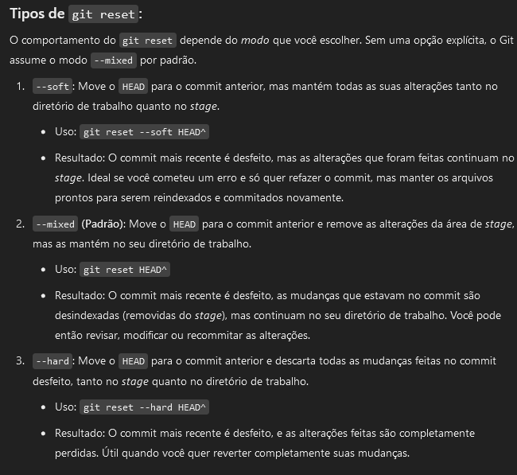

Basic
-
git --version-
Shows the git version.
-
-
git <generic_command> -h-
Shows the help/tutorials for the given command; e.g.: git clean -h.
-
Setup
New Repo
Setup Cheatcode
-
On powershell:
$remote_url = ""
git init
# Init
git branch -M main
# Renames branch to main.
git add .
# Adds everything
git commit -m "init"
# Commits
if ($remote_url -ne "") {
git remote add origin $remote_url
# Adds remote.
if (git ls-remote --heads origin main) {
# "Does the remote already have a branch called main?"
git pull --rebase --allow-unrelated-histories origin main
# Pulls anything from remote (license, for example) and does a rebase
}
git push -u origin main
# Pushes any local commits to remote.
}
-
git init&&git branch -M main-
Initializes a git repository. If the directory doesn't have a
.gitfolder, it is created with files inside.
-
-
git remote add origin https://github.com/YOUR_USER/YOUR_REPO.git-
Adds a remote repository named
originto your local repository.
-
-
git remote -v-
Displays the configured remote repositories and their URLs.
-
-
git branch -M main-
Renames the current branch to
main. Useful if you want to rename the default branch (for example, after runninggit init).
-
-
git branch main-
Creates a new branch named
main.
-
-
git checkout main-
Switches to the
mainbranch.
-
-
git branch-
Lists all local branches and highlights the current branch.
-
git branch -a-
Lists:
-
Local branches (the ones in your repository).
-
Remote-tracking branches (copies of branches that exist on a remote, such as origin/main).
-
-
-
Existing Repo
-
git clone
git clone https://github.com/username/repo.git
git clone https://github.com/username/repo.git my_custom_folder
git clone git@github.com:username/repo.git
Authentication
-
git config --global user.email "you@example.com" -
git config --global user.name "Your Name"
Commit
-
git add <file_name or abbreviations_for_multiple_files>-
git add .-
Stages everything.
-
-
Adds the changes of the file(s) to the staging area.
-
-
git commit -m "title" -m "description"-
Commits.
-
Push/Pull to Remote
-
git push -u origin main-
-u-
Tells Git to remember that main tracks origin/main, so future pushes can simply be
git push
-
-
-
git pull
Remotes
-
git remote-
Lists the names of the remotes
-
-
git remote -v-
Lists the names and URLs of the remotes.
-
-
git remote show origin-
Remote details.
-
Tags
-
git push origin --tags-
Push all tags to remote.
-
-
git push origin <tagname>-
Pushes a specific tag to remote.
-
-
git ls-remote --tags origin-
Lists the tags from the remote.
-
Status, Info
-
git show <COMMIT_ID> (or) <HEAD~><number_of_commits_to_go_back>-
Shows the given commit.
-
-
git status-
Gives information about commits and the staging area.
-
git status -s-
Gives the information in a shortened form; short format.
-
-
-
git ls-a-
Shows all git files.
-
-
git ls-tree <COMMIT_ID> (or) <HEAD~><number_of_commits_to_go_back>-
Shows the content in a 'tree' format of the given commit; if no commit is given, the current one is used.
-
-
git rm <file_name>-
Removes the file from the local directory and the staging area.
-
Restoring/Undo/Revert
-
revert-
Creates a new commit that reverses the changes of the previous commit.
-
It's pretty safe.
-
-
git reset-
Moves HEAD "back", basically doing an UNDO of everything new that was done.
-
(2024-10-19) I used
git reset. It worked nicely. The commit is undone and the commit's changes are placed in the Changes tab to be committed again or discarded. -
Types of 'reset':
-
git reset==git reset HEAD -
git reset HEAD^-
HEAD^means "the parent commit" of the commit HEAD is pointing to (the commit before the most recent).
-
-
-

.
-
-
restore-
Restores the file to a previous version.
-
There are other options with
git restore -h. -
git restore \=\=source\=<COMMIT_ID> (or) <HEAD~><number_of_commits_to_go_back> <file_name>
-
-
amend-
Combines the previous commit with the staged modifications.
-
Usually used only to change the commit message/description.
-
I tried to use this when there were file changes, and it resulted in creating a new branch, with a merge back to the current branch with the changes. It was kind of weird and not "clean".
-
-
cherry-pick-
Used to move individual commits between branches, commonly used to fix the mistake of committing to the wrong branch.
-
-
reflog-
Reverts a commit or branch that was deleted, by going back in time.
-
reflog .
-
Logging
Navigate
-
Scroll:
-
Space→ next page -
b→ previous page -
Enter→ next line -
y→ previous line
-
-
Search:
-
/pattern→ search forward -
?pattern→ search backward -
n→ repeat search forward -
N→ repeat search backward
-
-
Go to start/end:
-
g→ start of file -
G→ end of file
-
-
Exit:
-
q→ quitlessand return to shell
-
Git Log
-
git log-
Ex:
-
git log --follow -p -m "--pretty=format:COMMIT: %ad HASH: %h" --word-diff -U0 --date=short -- "path.md"
-
-
Shows the change logs.
-
git log --oneline-
Shows the logs in a compact form.
-
-
Filter options can be by 'date', 'message', 'author', 'file' or 'branch'.
-
--follow-
Continue listing the history of a file beyond renames (works only for a single file).
-
-
--pretty-format-
%H-
commit hash
-
-
%h-
abbreviated commit hash
-
-
%T-
tree hash
-
-
%t-
abbreviated tree hash
-
-
%P-
parent hashes
-
-
%p-
abbreviated parent hashes
-
-
%an-
author name
-
-
%aN-
author name (respecting .mailmap, see git-shortlog or git-blame )
-
-
%ae-
author email
-
-
%aE-
author email (respecting .mailmap, see git-shortlog or git-blame )
-
-
%al-
author email local-part (the part before the
@sign)
-
-
%aL-
author local-part (see
%al) respecting .mailmap, see git-shortlog or git-blame )
-
-
%ad-
author date (format respects --date= option)
-
-
%aD-
author date, RFC2822 style
-
-
%ar-
author date, relative
-
-
%at-
author date, UNIX timestamp
-
-
%ai-
author date, ISO 8601-like format
-
-
%aI-
author date, strict ISO 8601 format
-
-
%as-
author date, short format (
YYYY-MM-DD)
-
-
%ah-
author date, human style (like the
--date=humanoption of git-rev-list )
-
-
%cn-
committer name
-
-
%cN-
committer name (respecting .mailmap, see git-shortlog or git-blame )
-
-
%ce-
committer email
-
-
%cE-
committer email (respecting .mailmap, see git-shortlog or git-blame )
-
-
%cl-
committer email local-part (the part before the
@sign)
-
-
%cL-
committer local-part (see
%cl) respecting .mailmap, see git-shortlog or git-blame )
-
-
%cd-
committer date (format respects --date= option)
-
-
%cD-
committer date, RFC2822 style
-
-
%cr-
committer date, relative
-
-
%ct-
committer date, UNIX timestamp
-
-
%ci-
committer date, ISO 8601-like format
-
-
%cI-
committer date, strict ISO 8601 format
-
-
%cs-
committer date, short format (
YYYY-MM-DD)
-
-
%ch-
committer date, human style (like the
--date=humanoption of git-rev-list )
-
-
%d-
ref names, like the --decorate option of git-log
-
-
%D-
ref names without the " (", ")" wrapping.
-
-
-
git blame-
For line-level attributions.
-
Submodules
-
Based on having a git repository inside another git repository.
-
The submodule files are in the local directory, but are not part of the main repository, therefore not part of the main repo's version control.
-
-
The video explains how to fetch submodules of an existing repository when cloning, since they are not downloaded automatically:
-
Run
git clone --recursive-submodules _repo_url_when cloning. -
Or run
git submodule update --init --recursiveafter cloning.
-
-